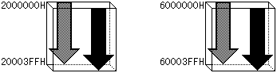
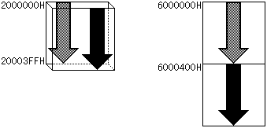
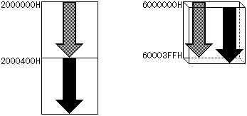
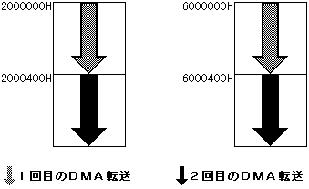
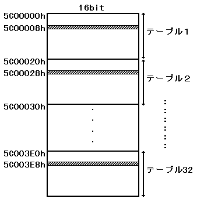

★HARDWARE Manual
★SCUユーザーズマニュアル
★HARDWARE Manual
★SCUユーザーズマニュアル




図2.8に示すように、ワークRAM領域(6000000H)からロングワード単位でデータを書き込みます。
図2.8 データ書き込み例
６００００００Ｈ┏━━━━━━━━━━┓ ┐ ┃ ２０Ｈ ┃ │ ←（転送バイト数） ┠──────────┨ │ ┃ ５Ｃ０００００Ｈ ┃ │（ａ）←（転送元アドレス） ┠──────────┨ │ ┃ ４００００００Ｈ ┃ │ ←（転送先アドレス） ６０００００ＣＨ┣━━━━━━━━━━┫ ┘ ┃ １０Ｈ ┃ │ ┠──────────┨ │ ┃ ６０８００００Ｈ ┃ │（ｂ） ┠──────────┨ │ ┃ ５Ｅ０００００Ｈ ┃ │ ６００００１８Ｈ┣━━━━━━━━━━┫ ┘ ┃ １５Ｈ ┃ │ ┠──────────┨ │ ┃ ６０８１０００Ｈ ┃ │（ｃ） ┠──────────┨ │ ┃ ＤＡ０００００Ｈ ┃ │ ←８００００００Ｈ＋５Ａ０００００Ｈ ６００００２４Ｈ┣━━━━━━━━━━┫ ┘ （終了コード） （転送先アドレス） ┃ ┃
書き出しアドレスレジスタ(D0W)にDMAパラメータソースアドレス(6000000H)を書き込みます。
アドレス加算値(101H)をアドレス加算値レジスタD0ADに書き込みます。
(CPUからアドレス25FE000CHにアドレス加算値をロードします。アドレス加算値の詳細
は本項のアドレス加算値に記載します。通常のDMAで、アドレス加算値は101Hを指定します。)
DMAモードを1、アドレス更新ビットとDMA起動要因は必要に応じて設定し、
モード・アドレス更新・DMA起動要因レジスタD0MDに書き込みます。
例えば、アドレス更新を保持モードとし、V-ブランク-INを起動要因とした場合
、D0MDには1000000Hを書き込みます。
(CPUからアドレス25FE0014Hに1000000Hをロードします。)
DMAイネーブルビットに1をセットし、(４)で設定した起動要因が発生した場合 DMAが起動され、DMA終了コードを検出するまで、(a)〜(c)のDMA転送が順に実行 されます。DMA終了コードは、ワークRAM領域にのみ存在するDMA間接モードの 終了通知コードで、このビットの"1"が検出されない限り、DMA転送は続行され ます。
６００００００Ｈ┏━━━━━━━━━━┓ ┃ ２０Ｈ ┃ ┠──────────┨ ┃ ５Ｃ０００００Ｈ ┃ ┠──────────┨ ┃ ４００００００Ｈ ┃ ６０００００ＣＨ┣━━━━━━━━━━┫ ┃ １０Ｈ ┃ ┠──────────┨ ┃ ６０８００００Ｈ ┃ ┠──────────┨ ┃ ５Ｅ０００００Ｈ ┃ ６００００１８Ｈ┣━━━━━━━━━━┫ ┃ １５Ｈ ┃ ┠──────────┨ ┃ ６０８１０００Ｈ ┃ ┠──────────┨ ┃ ＤＡ０００００Ｈ ┃ ６００００２４Ｈ┣━━━━━━━━━━┫ ┐ ┃ ３０Ｈ ┃ │ ┠──────────┨ │ ┃ ６０９００００Ｈ ┃ │（ｄ） ┠──────────┨ │ ┃ ５００００００Ｈ ┃ │ ６００００３０Ｈ┣━━━━━━━━━━┫ ┘ ┃ ２５Ｈ ┃ │ ┠──────────┨ │ ┃ ６０Ａ００００Ｈ ┃ │（ｅ） ┠──────────┨ │ ┃ Ｄ１０００００Ｈ ┃ │ ←８００００００Ｈ＋５１０００００Ｈ ６００００３ＣＨ┣━━━━━━━━━━┫ ┘ （終了コード） （転送先アドレス） ┃ ┃
図2.10 アドレス加算値設定によるDMA転送実行例

★HARDWARE Manual
★SCUユーザーズマニュアル